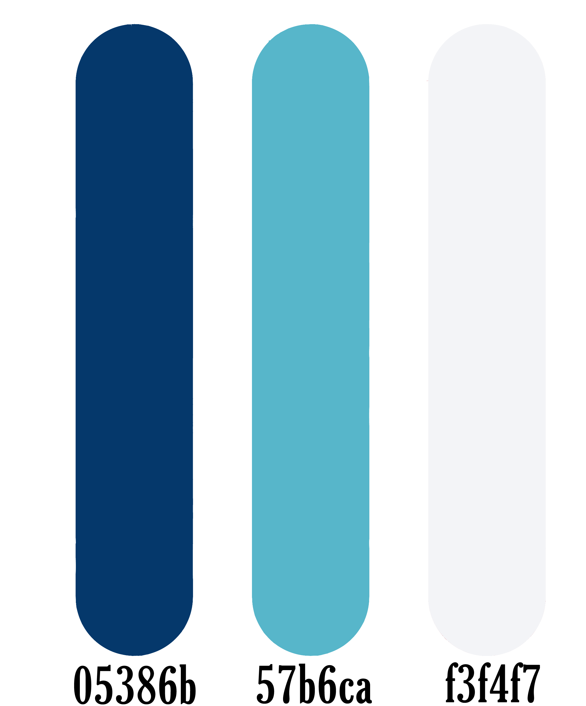
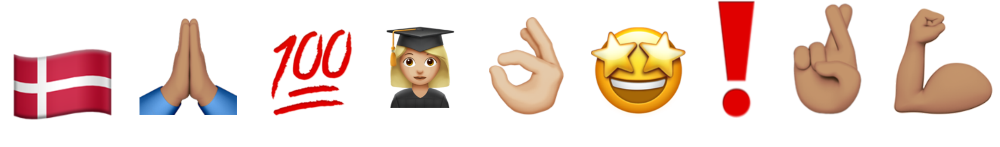
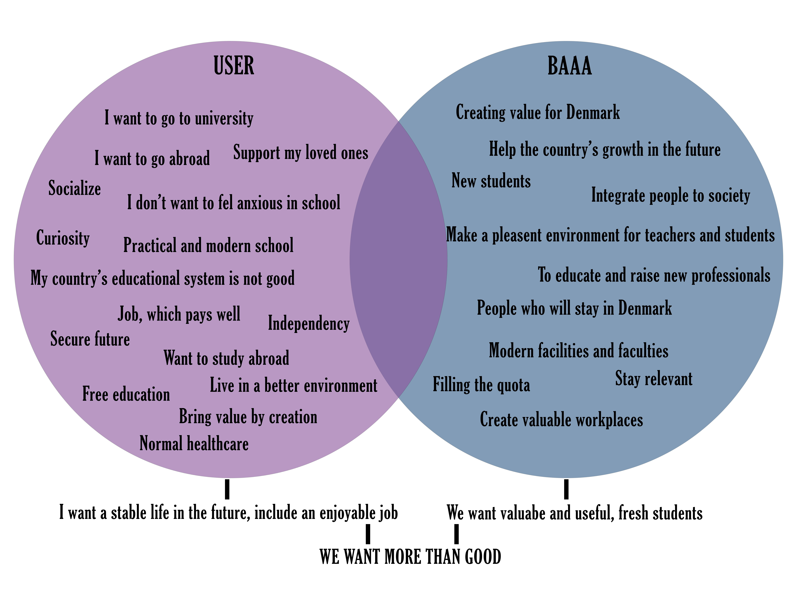

Campaign overview
Goals:
Key campaign messages & offers:
Campaign media plan & budget:
- SoMe:
- Before campaign:
- People know Business Academy Aarhus
- Have all the spots filled in in the international classes
- To have a connection/feel supported even before seeing the school in person
- To reach students that are currently in the choosing phase of their education. (Mainly last year or one year before last year of high school but also people who are planning on learning in BA/AP degree at any age.)
Key campaign messages & offers:
- Using Voice of Tone: Youthful, Energetic, Cooperative, Realistic, Motivating
- We want them to feel secure in their choice, show them a picture that will tell: “It’s an adult world, but we still want you to have fun and enjoy the education.”
- Helping them with application process, by showing them information, but not templates
Campaign media plan & budget:
- SoMe:
- Tiktok
- Not yet discussed
- Depends on visibility – if we can’t reach people without ads, then buying on all platforms (mainly concerns 18+)
- If we don’t have enough visibility – after 2nd week of campaign we can start buying ads
- Before campaign:
- Checking information we had – Last campaigns (what worked, what didn’t)
- Rewrite anything that changed
- Ads, if necessary
- Looking at the numbers (views/likes), if one platform is doing much better, than the others, then
- More content on that page (still, not overwhelmingly)
- Find out if we have a problem on site, that isn’t going as well
- Change the flow of content or timeline if it seems neccessary
Strategic consideration
Goals:
- Make our education known and have enough new students for the new semester
- Regular media presence in social media that is used by high schoolers
- Giving them tips and help about application, so it won’t feel stressful
- - Internal (with current team members):
- Easy communication between members
- Programming skills
not the best
- Time management
-
Strength:
- Weaknesses:
- Needs improvement:
- - External (BAAA, Multimedia Design)
- Changing laws (English education ending)
- Keeping an eye on trends on SoMe
- No competitors in this field (Multimedia Design only in here)
-
Macro:
- Task:
- People who are currently thinking about studying abroad Mainly from age of 17 to 19/20 (Last 2 years of high school)
- Helpful information for application
- General information about the program and school
- Using Instagram, Facebook and TikTok and their trends
Design guide
Colors
Our main color is blue, which represent not just the Academy, but also the wisdom, trust, and loyalty we want to convey. These reasons why we have 2 main shades of blue to use, and one dirty white color, which can make easier for the eye to read text on it.
Emojigraphy
Sweet spot
